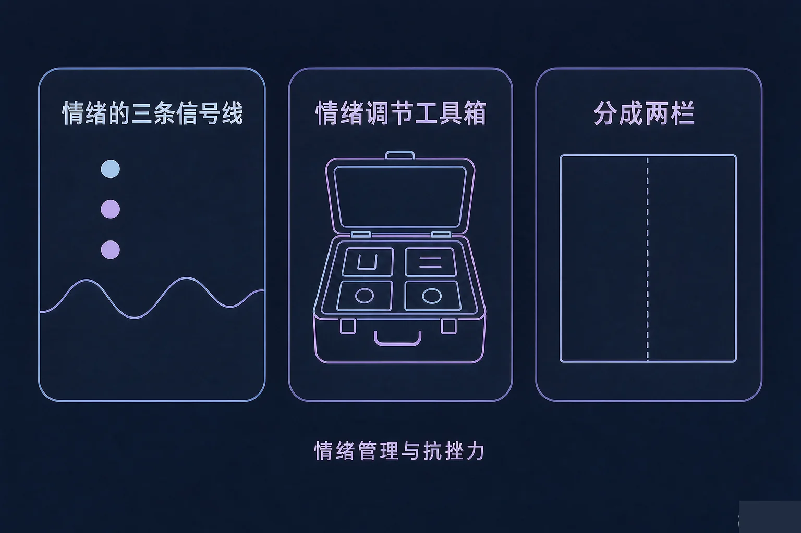
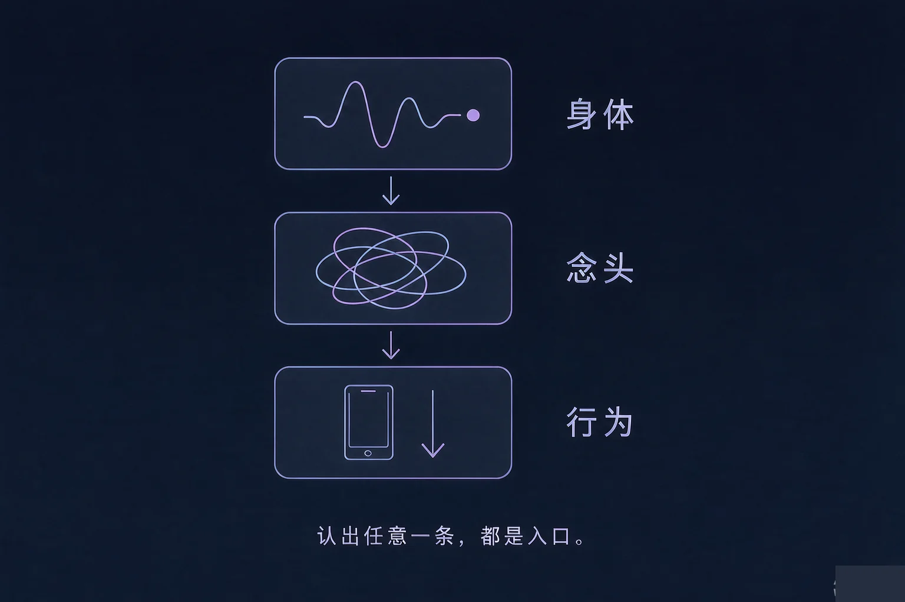
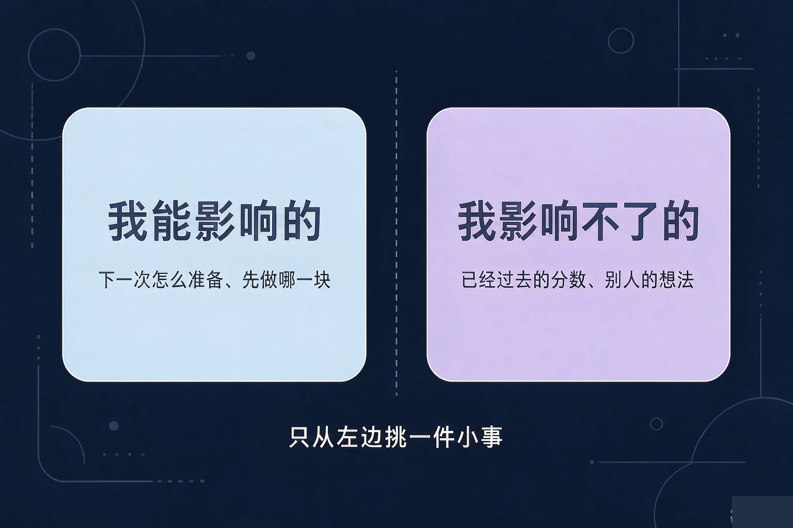

Gallery
v1.0.0 · skill v7.22.0
高中高二 · 情绪调适
状态不好的时候，除了硬撑，还能做点什么？

选一个最贴近你最近状态的困惑，后面的内容都会围着它展开。
选择或输入后，这节课会围绕你的问题展开。
先凭直觉选一个，选完立刻看到解释——错了也没关系，正好知道要重点听哪里。
1. 明天要交作业，今晚还差一大半，你心里很紧。下面哪种做法更用得上？
先让身体缓一点，再挑一件三分钟能做完的事，通常比反复催自己更容易真的动起来。错因提醒：常见错误是误认为必须先有状态才能开始，其实很多时候是先开始一点，状态才跟上。
2. 一件事结果不好，下面哪种想法更接近「分成两栏」的做法？
把影响不了的部分放下，把能影响的部分留下，才不会把力气用光在没法动的地方。错因提醒：容易把「分栏」搞混成「推卸责任」——它其实是让你找到真正能动手的那一小块。
3. 关于这几件调节方法，下面哪种说法更贴近事实？
把这句期待放低一点，反而更容易坚持。错因提醒：误认为方法必须立刻见效，一旦没有马上好转就放弃，是很常见的误解。
在能说清「我现在很难受」之前，身上其实已经有了变化。先认出它们，比先讲道理有用。
为什么要先学这个？你已经知道难受的时候要做点什么；但说不清难受在哪，就不知道从哪下手；所以先学会认信号。
误认为这只是「想太多」，于是只劝自己别想了。可身体和行为那两条线还在，劝完往往还是动不了。先认信号，再动手。

🔍 深层理解 换个角度再看一遍这件事，看看能不能说出背后的原理。
看见它：你也许说不出自己是什么情绪，但你通常能说出「肩膀很紧」「不想回消息」——从这些具体的信号进去就好。
解释它：为什么身体先有反应？因为它是自动的，不用你想。所以它常常比语言更早、也更诚实。
迁移它：这条规律对身边的人也成立：同学突然话变少、一直趴着，可能不是不想理你，而是他正卡在某条线上。
先选一个你最近真的遇到过的情境，再从四件小事里挑一件。同一个情境可以把四件都试一遍，比一比。
四件小事里，这一件最值得练：分栏。它不改变已经发生的事，但能让你看清哪里还能动。
我能影响的
下一次怎么准备、现在先做哪一块、要不要去问清楚、手机放哪儿。这一栏通常只剩一两件很具体的事。
我影响不了的
已经过去的分数、题目难不难、别人当时怎么想、别人的表情。这一栏不需要你去扛。

先选一个情境，再轮流点开两种看法，看看它们分别带来什么感受、下一步有没有变化。
盯着结果
盯着能改的
情境：一场准备了很久的考试，结果比预期低了不少，你连着两三天都不太想说话。
两个方向都容易走偏：一种是把影响不了的也扛在自己身上，比如反复想别人会怎么看，于是把力气用光；另一种是把什么都推给外部，于是能影响的那一栏空了，变成什么也做不了。分栏的目的，是让每一边都各归各位。
先凭直觉选一个，选完立刻看到解释——错了也没关系，正好知道要重点听哪里。
1. 关于「把一件事分成两栏」，下面哪种理解更合适？
分栏是让力气落在真的能动的地方，它不承诺结果。错因提醒：容易把「分栏」误认为「推卸责任」，也容易误认为只要分好栏就一定会好转，这两种理解都会让它失去作用。
2. 情绪来的时候，下面哪一条信号通常出现得最早？
身体反应是自动的，往往比说得出情绪更早。先抓住它，就有入口。错因提醒：常见错误是把这些变化当成想太多，于是忽略了最早就出现的线索。
3. 「我要把这次落下的全部补回来，一天也不能再拖」——这句话的问题主要在哪？
决心大不等于做得到。把范围缩到三分钟能完成的一件小事，才有真正的开始。错因提醒：误认为计划越严越有用，结果常常是第二天就散了。
八张说法卡，每一张选一栏。选完会给出解释，也留意一下自己在哪一栏停留得更久。
写下来，留给自己：
在你刚刚分好的「我能影响的」那一栏里，挑一件明天就能做完的小事，写清它做完的样子。
先凭直觉选一个，选完立刻看到解释——错了也没关系，正好知道要重点听哪里。
1. 比赛前一天，你突然很紧，反复想着万一发挥不好。这时比较合适的第一步是：
先让身体松一点，比反复提醒自己更有用；反复演练失误画面会让信号更强。
2. 和同学的关系出了点问题，你已经两天没睡好。比较好的做法是：
对方的想法属于影响不了的那一栏，反复想它带不来下一步。错因提醒：容易把「想清楚对方怎么想」误认为解决问题的前提，其实它常常只是消耗。
3. 小组合作里有个同学一直没完成他那部分，你打算怎么做？
能影响的那一栏里有说清事实、给出时间、提出请求，甚至有向老师说明情况。先开口不等于一定成，但不开口就一定没有变化。
回到开头那种时刻：事情堆在一起、什么都不想开始的时候，你不必先把状态调整到最好。先认一个信号，缓一缓，分两栏，然后做一件三分钟的小事。做完，今天就算数。
四步口诀，帮你记住：先缓一缓，分成两栏，做件小事，找人说说。
给别人讲一遍：请用「信号、两栏、一件小事」这三个词，说说你上周某一次难受的时候，本来可以怎么走。
三层练习，做完第一、二层就算通关；第三层留给愿意继续探索的同学。
⭐ 基础巩固（必做）
⭐⭐ 能力应用（必做）
⭐⭐⭐ 迁移挑战（选做）
左边是学它之前要先会的，右边是学会之后可以继续探索的，下面是同一领域的伙伴知识。
图谱正在加载：首次进入需下载知识索引（约 1–3 秒），加载完成后本行会自动消失。